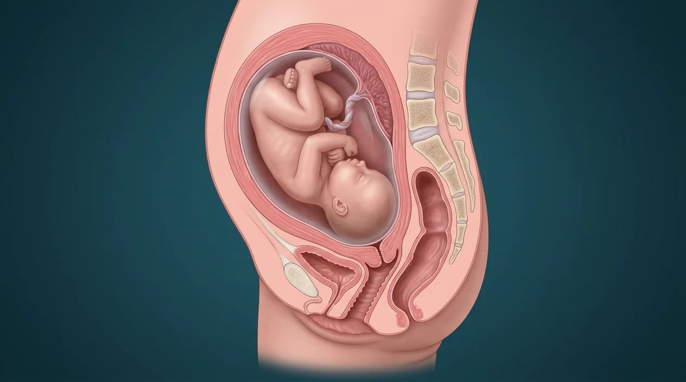

How this part of the body works
The first stage of labor begins when contractions produce progressive cervical change and ends at complete cervical dilation, approximately 10 cm. Effacement shortens and thins the cervix as it dilates. Latent and active phases vary; active labor is often defined around 6 cm, not a fixed timetable for every person. The NEW digital cutaway models a fetus before birth and a partially opening cervix. It is not an obstetric examination or an exact centimeter measurement. A second NONPREGNANT regional cervix image is provided separately for structural context. Fetal membranes may remain intact or rupture. Heavy bleeding, severe persistent pain or reduced fetal movement requires clinical assessment.
Follow every stage independently
Sperm and egg are separate branches before fertilization. Obstetric gestational weeks are usually counted from the last menstrual period, roughly two weeks before conception. Digital labor-stage illustrations model separate moments, not clinical birth photographs or patient measurements.
See the anatomy at the right scale
Tap an image to enlarge and tap again to close. These are digital educational models, not microscope photos, measured ultrasounds, clinical birth images or exact developmental clocks.
Digital cutaway of illustrative PARTIAL dilation, not a measurement of centimeters or actual labor recording.
An existing regional cervix reference only; NOT a pregnant or laboring cervix.
Stage anatomy and developmental milestones
These 20 anatomy and development entries explain each stage without placing false pointers on an illustrative context plate.
Uterine contractions
Rhythmic myometrial activity is associated with progressive cervical change in labor.
What it doesSupplies force for eventual fetal descent.
Clinical connectionRegular pain alone does not establish a cervical examination finding.
Picture context Digital cutaway of illustrative PARTIAL dilation, not a measurement of centimeters or actual labor recording.
Myometrium
Muscular uterine wall generates contractions and shortens through labor.
What it doesDrives progressive cervical change and fetal descent.
Clinical connectionAn illustration cannot gauge contraction strength.
Picture context Digital cutaway of illustrative PARTIAL dilation, not a measurement of centimeters or actual labor recording.
Uterine fundus
Upper uterine region participates in contraction and retraction.
What it doesHelps direct force toward lower segment.
Clinical connectionNo separate fundal force is measured on the cervix plate.
Picture context Digital cutaway of illustrative PARTIAL dilation, not a measurement of centimeters or actual labor recording.
Lower uterine segment
Distensible uterine portion above cervix adapts during later pregnancy and labor.
What it doesProvides pathway toward cervical opening.
Clinical connectionThin tissue relationships vary; not depicted on a nonpregnant cervix plate.
Picture context Digital cutaway of illustrative PARTIAL dilation, not a measurement of centimeters or actual labor recording.
Cervix
Inferior uterine portion forms canal between uterine cavity and vagina.
What it doesChanges by effacement and dilation in first stage.
Clinical connectionThe regional image does NOT depict its pregnancy-specific dilation.
Picture context Digital cutaway of illustrative PARTIAL dilation, not a measurement of centimeters or actual labor recording.
Internal cervical os
Upper cervical opening toward uterine cavity.
What it doesDefines upper end of cervical canal.
Clinical connectionNot individually measured on the reference image.
Picture context Digital cutaway of illustrative PARTIAL dilation, not a measurement of centimeters or actual labor recording.
External cervical os
Lower cervical opening into vagina.
What it doesPart of cervical pathway for birth.
Clinical connectionAppearance differs with parity and labor stage.
Picture context Digital cutaway of illustrative PARTIAL dilation, not a measurement of centimeters or actual labor recording.
Cervical effacement
Cervix progressively shortens and thins in preparation for birth.
What it doesFacilitates dilation and passage.
Clinical connectionCannot infer a percent effacement from this digital plate.
Picture context Digital cutaway of illustrative PARTIAL dilation, not a measurement of centimeters or actual labor recording.
Cervical dilation
Cervical opening enlarges until clinically complete, approximately 10 cm.
What it doesAllows fetal presenting part to pass.
Clinical connectionNo centimeter measurement is claimed from the image.
Picture context Digital cutaway of illustrative PARTIAL dilation, not a measurement of centimeters or actual labor recording.
Latent phase
Early first-stage interval has cervical changes that vary widely in speed.
What it doesPrecedes more rapid active dilation in many labors.
Clinical connectionTime alone does not diagnose abnormal progress.
Picture context Digital cutaway of illustrative PARTIAL dilation, not a measurement of centimeters or actual labor recording.
Active phase
Faster cervical dilation is often considered from about 6 cm in modern clinical descriptions.
What it doesDefines a later first-stage clinical phase.
Clinical connectionThresholds and management decisions require a clinician.
Picture context Digital cutaway of illustrative PARTIAL dilation, not a measurement of centimeters or actual labor recording.
Cervical mucus plug
Pregnancy mucus can be released as cervix changes.
What it doesForms part of pregnancy cervical barrier.
Clinical connectionIts passage alone cannot time birth precisely.
Picture context Digital cutaway of illustrative PARTIAL dilation, not a measurement of centimeters or actual labor recording.
Fetal membranes
Amnion and chorion envelop fluid-filled pregnancy and may remain intact during stage one.
What it doesProtects fetal environment before or until rupture.
Clinical connectionRupture timing differs, and apparent fluid loss needs clinical evaluation.
Picture context Digital cutaway of illustrative PARTIAL dilation, not a measurement of centimeters or actual labor recording.
Amniotic fluid
Fluid surrounding fetus remains within intact membranes before rupture.
What it doesCushions fetus and permits movement.
Clinical connectionA nonpregnant cervix image does not show fluid quantity.
Picture context Digital cutaway of illustrative PARTIAL dilation, not a measurement of centimeters or actual labor recording.
Presenting part
Fetal body part nearest cervix, commonly head for cephalic presentation.
What it doesShapes pressure on cervix.
Clinical connectionPresentation must be assessed clinically; image shows no fetus.
Picture context Digital cutaway of illustrative PARTIAL dilation, not a measurement of centimeters or actual labor recording.
Engagement
Fetal presenting part relates to maternal pelvic inlet during descent.
What it doesConnects labor anatomy to bony pelvis.
Clinical connectionAn isolated cervical plate cannot establish fetal station.
Picture context Digital cutaway of illustrative PARTIAL dilation, not a measurement of centimeters or actual labor recording.
Maternal pelvic inlet
Bony upper opening forms entrance to birth canal.
What it doesContributes to fetal passage geometry.
Clinical connectionNo image predicts an individual delivery route.
Picture context Digital cutaway of illustrative PARTIAL dilation, not a measurement of centimeters or actual labor recording.
Vaginal canal
Soft-tissue passage extends from cervix toward external opening.
What it doesForms lower part of potential vaginal birth route.
Clinical connectionFirst stage ends before birth through this passage.
Picture context Digital cutaway of illustrative PARTIAL dilation, not a measurement of centimeters or actual labor recording.
Maternal and fetal assessment
Clinical care evaluates wellbeing during labor using appropriate methods.
What it doesHelps distinguish normal variation from urgent problems.
Clinical connectionHeavy bleeding, severe persistent pain or reduced fetal movement needs urgent medical attention.
Picture context Digital cutaway of illustrative PARTIAL dilation, not a measurement of centimeters or actual labor recording.
Complete cervical dilation
When the cervix is fully open, first stage ends and second stage starts.
What it doesMarks transition to fetal birth stage.
Clinical connectionA patient-specific exam, not the render, establishes completion.
Picture context A related regional anatomy model; the individual event or cell is not separately identifiable in this picture.
Five questions about Labor stage 1 · cervix dilates
Short answers grounded in the structures described above. Use the illustrated guide for anatomical context.
When does the first stage of labor begin and end?
It begins when uterine contractions produce progressive cervical change and ends at complete cervical dilation, approximately 10 cm. It does not end with delivery of placenta.
What is cervical effacement during labor?
Effacement means thinning and shortening of the cervix. Dilation describes enlargement of the cervical opening; both relate to first-stage change.
At what dilation is active labor often considered?
Modern clinical descriptions commonly regard active labor as starting around 6 cm, rather than treating 4 cm as a universal boundary. Care decisions and normal progress require individual assessment.
Must the amniotic membranes rupture before contractions begin?
No. Membrane rupture may occur before or during labor, and timing differs. Suspected rupture requires appropriate clinical assessment, not comparison with a still teaching plate.
Can the labor-stage-one image measure cervical dilation?
No. The new digital cutaway models a partly opening cervix and a fetus still inside the uterus, but cannot give an individual patient’s dilation in centimeters. A second nonpregnant cervix image is separately identified as structural context only.
Related anatomy guides
Follow these connected structures and body systems in the illustrated atlas.
 Fetus · growth & pregnancy trimestersFollow fetal growth, placenta, organs and first, second and third trimester landmarks without confusing pregnancy weeks and conception age.↗
Fetus · growth & pregnancy trimestersFollow fetal growth, placenta, organs and first, second and third trimester landmarks without confusing pregnancy weeks and conception age.↗ Labor stage 2 · birth of babySeparate second-stage birth chapter: full dilation, fetal descent, rotation and delivery of the baby.↗
Labor stage 2 · birth of babySeparate second-stage birth chapter: full dilation, fetal descent, rotation and delivery of the baby.↗ Uterus — layers & cavityThe womb in cross-section: endometrium, junctional zone, myometrium, cavity, isthmus and the key clinical boundaries.↗
Uterus — layers & cavityThe womb in cross-section: endometrium, junctional zone, myometrium, cavity, isthmus and the key clinical boundaries.↗ Female pelvis & perineumThe female pelvic floor in sagittal section: bladder and urethra, vagina and anteverted uterus, rectum behind — plus the ligaments and pouches that position them.↗
Female pelvis & perineumThe female pelvic floor in sagittal section: bladder and urethra, vagina and anteverted uterus, rectum behind — plus the ligaments and pouches that position them.↗Further reading
General anatomy references and related source chapters for continued study. These links do not make the digital illustrations clinical images or certify every anatomical variant.
This educational page is not medical advice and has not undergone formal clinical peer review. Spotted an error? Contact the editor.
Open the regional digital plate, study entries and a short self-test. Visible markers occur only for identifiable sperm and oocyte structures.